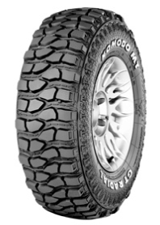

หน้าหลัก
สินค้า
รถยนต์ทั่วไป
รถยนต์อเนกประสงค์ (SUV)
รถยนต์กระบะเล็ก/รถแวน (LIGHT TRUCK/VAN)
รถยนต์กระบะใหญ่และรถบรรทุก (TRUCK&BUS)
ดูแลรักษา
เกี่ยวกับเรา
รถยนต์อเนกประสงค์/4x4 (SUV)
ออกแบบมาสำหรับรถยนต์อเนกประสงค์ หรือ 4x4 โดยเฉพาะครบทุกการวิ่งบนทางเรียบ ทางออฟโรด หรือทุกพื้นผิวถนน ได้อย่างเต็มสมรรถนะ
หน้าหลัก
>> รถยนต์อเนกประสงค์/4x4(SUV)
ยางรถยนต์แบบสปอร์ท สำหรับรถยนต์สมรรถนะสูง
CHAMPIRO HPY(SUV)
ดอกยางแบบไม่สมมาตร
ร่องยางที่กว้างถึง 4ร่อง
โครงสร้างส่วนกลางของยาง ที่แข็งแรงเป็นพิเศษ
รายละเอียด >>
CHAMPIRO 528
รูปแบบช่วงกลางของยาง เป็นแนวตั้งที่แข็งแรง
ร่องดอกยางที่โค้งมน และร่องแนวตั้ง 2ร่อง
ไหล่ยางกว้างและ มีรูปแบบการจัดวางดอกยางที่ไม่เหมือนใคร
รายละเอียด >>
ยางรถยนต์ที่เหมาะสำหรับวิ่งทางเรียบ
SAVERO SUV
ร่องยางกว้างถึง 4ร่อง
ร่องดอกยางรูปทรง เรขาคณิต
โครงสร้างส่วนกลางที่เหนียวแน่น
ไหล่ยางเป็นบล็อคที่แข็งแรง
รายละเอียด >>
ยางรถยนต์ที่วิ่งได้ทุกสภาพพื้นผิว
SAVERO A/T Plus
ดอกยางเป็นบล็อคแบบพิเศษ พร้อมร่องดอกยางจำนวนมาก
พื้นที่ดอกยางกว้างและแข็งแรง
ร่องดอกยางที่กว้างบนไหล่ยางแบบเปิด
รายละเอียด >>
ADVENTURO AT3
ส่วนผสมของเนื้อยางแบบพิเศษ
ดอกยางเป็นบล็อคเชื่อมต่อกัน และโครงสร้างส่วนกลางรูปตัว S
ร่องดอกยางตัดมุมแบบ 3มิติ
เทคโนโลยีการออกแบบดอกยาง ที่แตกต่างถึง 5แบบ
ส่วนปกป้องขอบล้อ
รายละเอียด >>
ยางรถยนต์ที่เหมาะสำหรับ วิ่งทางโคลน

SAVERO KOMODO MT
ดอกยางพิเศษสำหรับวิ่งบนทางหิน
ร่องยางเปิดกว้างถึงด้านข้าง
ไหล่ยางแบบซิกแซก
โครงสร้างส่วนกลางและไหล่ยางแข็งแรง
รูปแบบดอกยาง คล้านกับผิวหนังของอุ้งมือมังกรโคโมโด
ส่วนปกป้องการกระแทก
รายละเอียด >>
SAVERO MT
ส่วนผสมเนื้อยาง เป็นแบบสูตรใหม่พิเศษ
ร่องยางบนไหล่ยางมีความกว้างเป็นพิเศษ
เหล็กคาดหน้ายาง 2ชั้น
รายละเอียด >>
Top